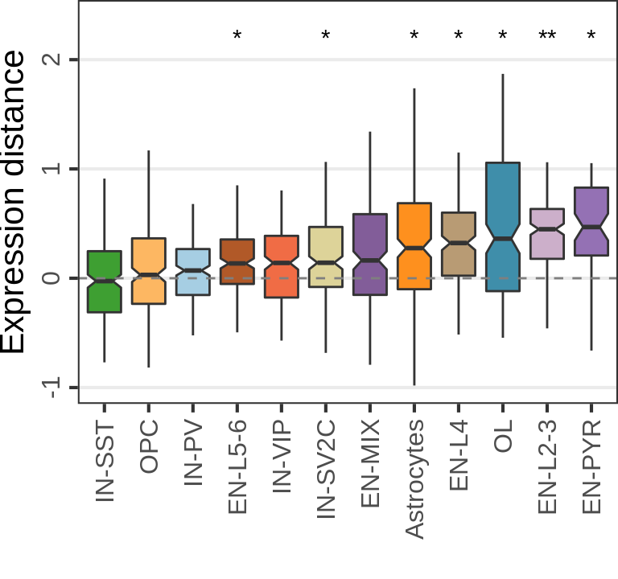

Main figure
PF
cao_pf <- read_rds(DataPath("PF/cao.rds")) %>% Cacoa$new()gg_pf <- cao_pf$plotExpressionShiftMagnitudes(ylab="Expresshion distance", y.max=0.21,
jitter.alpha=0.0) +
theme(axis.text.x=element_text(angle=45, hjust=1, vjust=1, size=10))
gg_pfMS
cao_ms <- read_rds(DataPath("MS/cao.rds")) %>% Cacoa$new()gg_ms <- cao_ms$plotExpressionShiftMagnitudes(name="es.top.de", ylab="Expression distance",
jitter.alpha=0.0, pvalue.y=2.2)
gg_ms
AZ (Variance vs Mean shift)
cao_az <- read_rds(DataPath("AZ/cao.rds")) %>% Cacoa$new()cao_az$estimateExpressionShiftMagnitudes(verbose=FALSE, name="mean.shifts", dist.type="cross.both")
cao_az$estimateExpressionShiftMagnitudes(verbose=FALSE, name="both.shifts", dist.type="cross.ref")
cao_az$estimateExpressionShiftMagnitudes(verbose=FALSE, name="var.shifts", dist.type="var")cao_az$cell.groups %>% levels() %>% lapply(function(ct) {
cao_az$plotSampleDistances(
name="mean.shifts", cell.type=ct, show.sample.size=FALSE, legend.position=c(0.01, 0.01), size=5
)
}) %>% .[!sapply(., is.null)] %>% plot_grid(plotlist=., nrow=1)y_labs <- c(mean.shifts="Expression shift", both.shifts="Total distance", var.shifts="Variance change")
gg_shifts <- c("mean.shifts", "var.shifts", "both.shifts") %>% lapply(function(n) {
cao_az$plotExpressionShiftMagnitudes(
name=n, ylab=y_labs[n], pvalue.y=0.33, notch=FALSE, ns.symbol="",
jitter.alpha=0.0, jitter.size=0.2
) +
ylim(-0.11, 0.35) + theme(
plot.margin=margin(l=5), axis.ticks.y=element_blank(), axis.title.y=element_text(margin=margin()),
axis.text.y=element_text(margin=margin())
)
})
plot_grid(plotlist=gg_shifts, nrow=1)p_guide <- guide_legend(override.aes=list(size=3), title="Condition")
p_types <- c("neuron", "oligo", "mg")
gg_mds <- lapply(p_types, function(ct) {
cao_az$plotSampleDistances(
name="mean.shifts", cell.type=ct, show.sample.size=FALSE, legend.position=c(0.01, 0.01), size=3,
show.legend=(ct == "neuron")
) + theme(
plot.title=element_blank(), legend.background=element_blank(), plot.margin=margin(),
panel.grid.minor=element_blank(), panel.grid=element_line(size=0.3), legend.key.height=unit(16, "pt"),
legend.title=element_text(margin=margin(l=5), size=14)
) +
guides(color=p_guide, shape=p_guide)
})
plot_grid(plotlist=gg_mds, labels=p_types, label_fontface="oblique", nrow=1, hjust=0, label_x=0.1)Simulations
n_samples <- c(3, 6, 9)
sce <- read_rds(CachePath('asd_sim_sces.rds'))$`IN-PV`$prep
sim <- generateSims(sce, n.cells=c(20, 50, 150), de.frac=DE_FRACS, n.cores=N_CORES,
n.samples=n_samples, n.repeats=5, verbose=FALSE)
cao_sim <- cacoaFromSim(sim, n.cores=N_CORES)Warning in initialize(...): Many function may be not supported for an object of
class dgCMatrixInterpreting data.object as a raw count matrixcao_sim$estimateDEPerCellType(name='de.full', n.cores=N_CORES)p_theme <- theme(
legend.background=element_blank(), legend.box="horizontal",
legend.box.margin=margin(l=5, t=5), legend.margin=margin(),
panel.grid.minor=element_blank()
)
gg_n_de <- lapply(cao_sim$test.results$de.full, function(dr) sum(dr$res$padj < 0.05)) %>%
plotNumSamplesDependency(params=sim$params) + p_theme
gg_n_deCompile figure
theme_ax <- theme(
axis.title.y=element_text(size=12),
axis.text.x=element_text(size=10), axis.text.y=element_text(size=10)
)
theme_ax_small <- theme(
axis.title.y=element_text(size=11), axis.title.x=element_blank(),
axis.text.y=element_text(size=8), axis.text.x=element_text(size=9)
)
theme_leg <- theme(
legend.text=element_text(size=10, margin=margin()),
legend.title=element_text(size=12, margin=margin()),
legend.key.height=unit(10, "pt"),
legend.key=element_rect(fill="transparent")
)
gg_mds[[1]] %<>% {. + theme_leg + theme(legend.position=c(0, 0.05))}
plot_grid(
plot_grid(
ggplot() + theme_nothing(),
gg_pf + theme_ax,
nrow=1, rel_widths=c(1, 1.3)
),
plot_grid(
plot_grid(
plotlist=c(
lapply(gg_mds, `+`, theme(plot.margin=margin(b=6))),
lapply(gg_shifts, `+`, theme_ax_small)),
nrow=2, rel_heights=c(1, 1.2), scale=0.99
),
plot_grid(
gg_ms + theme_ax + theme(axis.title.y=element_text(hjust=1)),
gg_n_de + theme(plot.margin=margin()) + theme_ax + theme_leg,
ncol=1
),
nrow=1, rel_widths=c(2, 1), scale=0.97
),
nrow=2, rel_heights=c(1, 1.4)
)ggsave(figurePath("3_expression_shifts.pdf"))